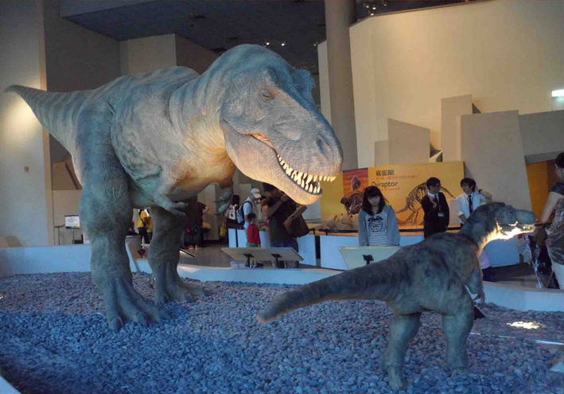

恐龍再現

恐龍已在六千五百萬年前滅絕了。沒有人有機會看過活的恐龍，透過化石和各種科學的研究發現， 這提供了我們無限的想像空間去復原恐龍。首先是恐龍骨骼結構的復原，接著是以生物力學分析行為模式， 再加上肌肉和皮膚，於是栩栩如生的恐龍又復活了。其實每一種膚色或每一個動作， 都代表著科學家對這些遠古生物的生活方式的一種推測，是對是錯，有待更多的科學發現來驗證。 科學的本質就是不斷探索。
恐龍已在六千五百萬年前滅絕了。沒有人有機會看過活的恐龍，透過化石和各種科學的研究發現， 這提供了我們無限的想像空間去復原恐龍。首先是恐龍骨骼結構的復原，接著是以生物力學分析行為模式， 再加上肌肉和皮膚，於是栩栩如生的恐龍又復活了。其實每一種膚色或每一個動作， 都代表著科學家對這些遠古生物的生活方式的一種推測，是對是錯，有待更多的科學發現來驗證。 科學的本質就是不斷探索。